Tonal Harmony
Elements of Rhythm
Molloy College – Sam Wells
Rhythm
In the previous class, we focused on how we describe the pitch aspect of music in notation.
Today, we will look at the time component, or Rhythm
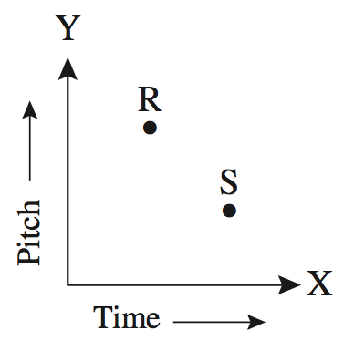Duration
The principal way we show time in music notation is be indicating the duration of a given note.
We show duration through a series of symbols that have been evolving from the beginning of written music to today.
Duration Symbols
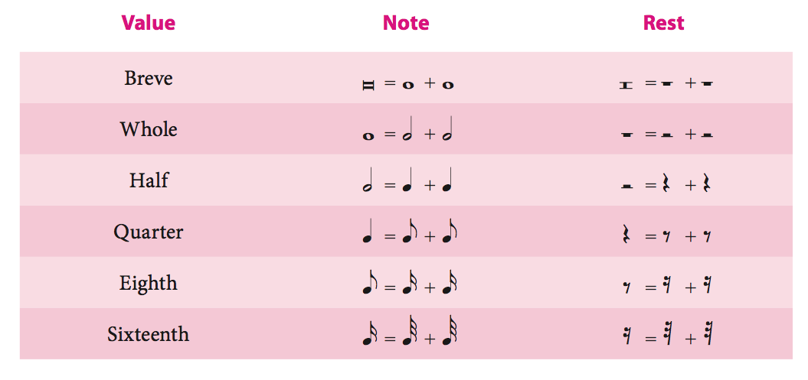Dotted Durations
- What happens when we add a dot after a duration?
- Add ½ of the value of the preceding note or rest to the duration
- What happens if we add another dot?
- Add ½ of the value of the preceding dot to the duration
- What happens if we add another dot?
- Add ½ of the value of the preceding dot to the duration
- What happens if we add another dot?
- Add ½ of the value of the preceding dot to the duration
- What happens if we add another dot?
Beat & Tempo
- We have almost all of our durations (bricks of time), but they are meaningless without a beat
- Beat: the basic pulse of a musical passage
- Tempo: the rate at which the beat occurs
- We measure and indicate the pulse with the number of beats in a minute (BPM).
- ♩= 76 would result in 76 evenly distributed beats over one minute.
Meter
- Meter: consistent patterns into which beats are grouped
- Groups of two, three, and four are the most common
- Each of these groups is called a measure
- Measures are separated by barlines
- There are two factors the make up the feel of the meter.
- Metric Accent: how the beats are grouped
- Division of the beat: how each individual beat is broken up (subdivision)
Metric Accents
- We refer to the number of beats in the make up a meter group in the following way:
- Duple Meter: two-beat measure
- Triple Meter: three-beat measure
- Quadruple Meter: four-beat measure
Metric Accents
Each of the preceding metric types stereotypically place stress on certain beats
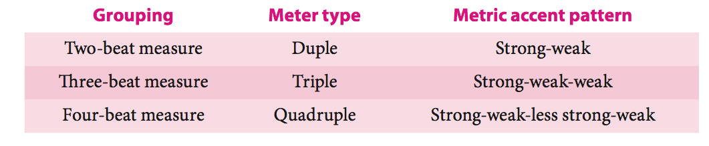Division of the Beat
- Music is full of note durations that are shorter than a beat.
- These are called divisions of the beat
- A beat can be divided in to two or three equal parts.
- Simple Beat: Two parts
- Compound Beat: Three parts
- This is not the same as how the beat divides the meter
Time Signatures
Time Signature: a symbol that tells the performer how many beats will occur in each measure, what note value will represent the beat, and whether the beat is simple or compound.
Simple Meter Time Signatures
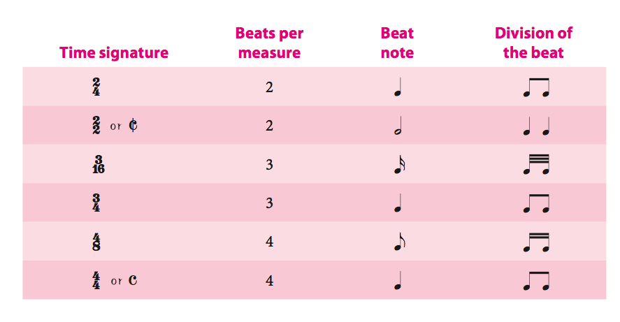Compound Meter Time Signatures
If the beat divides into three equal parts, as in a compound beat, the note value represent- ing the beat will be a dotted value, as shown next.
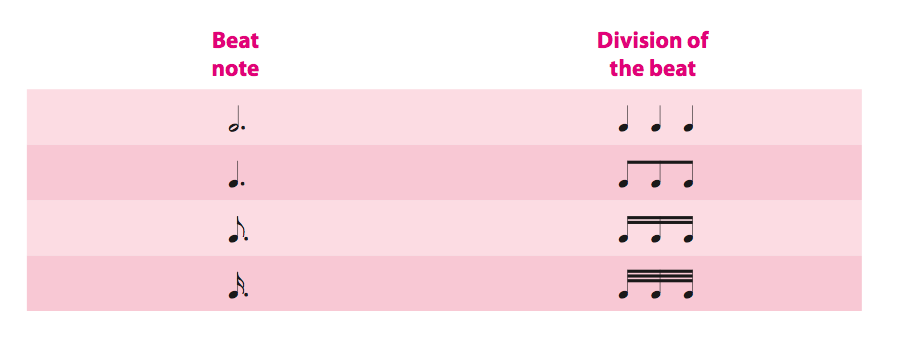Compound Meter Time Signatures
As there is no way to represent a dotted duration in the bottom part of the time signature, we use the division of the beat as the lower number, and the top number show the total division in a measure. This number must be divisible by three

Time Signatures in Summary


Simple Duple
Beethoven: Piano Concerto no. 3 in c minor, op. 37, mvt. 1, mm. 114-122
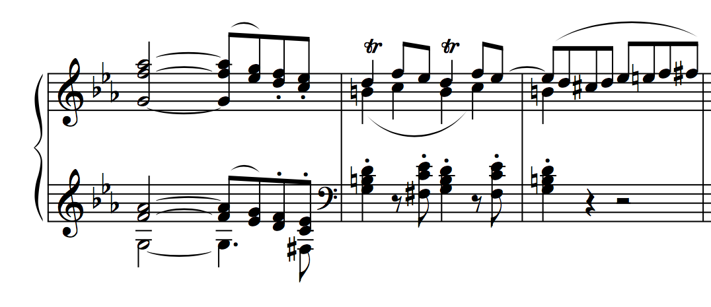 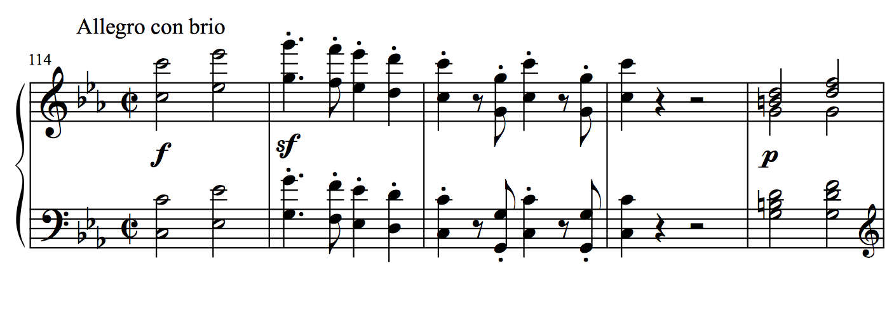Simple Triple
Chopin: Mazurka, op. 41 no. 1, op. 37, mm. 1-8
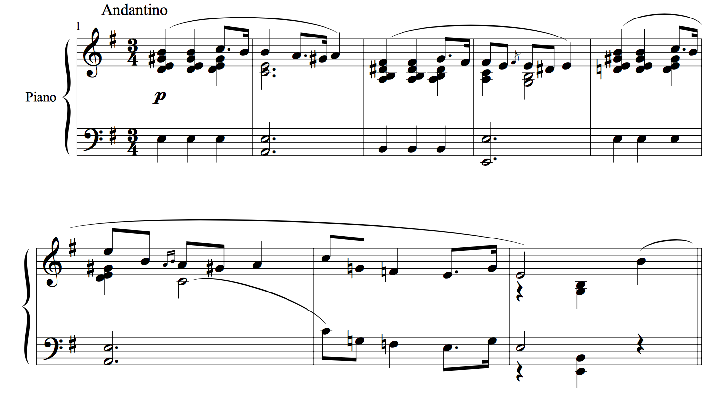Simple Quadruple
J.S. Bach: Orchestral Suite no. 3 in D Major, BWV 1068, Air, mm. 1-2
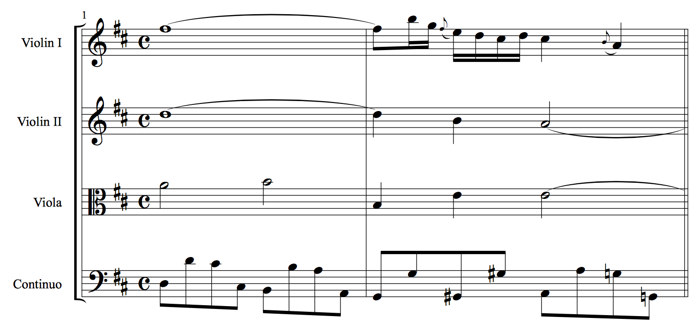Compound Duple
Beethoven: Bagatelle in E-flat Major, op. 33 no. 1, mm. 82-95
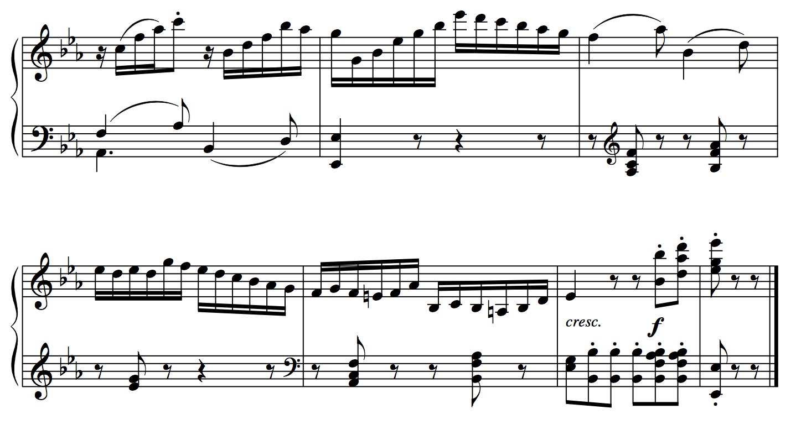 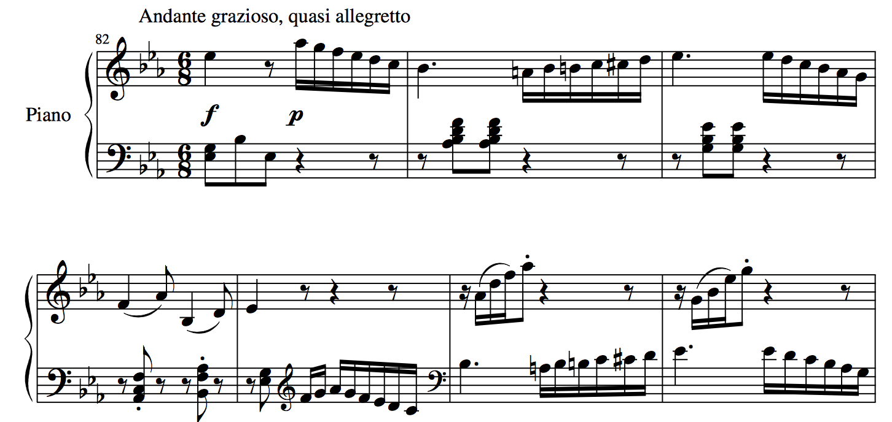Compound Quadruple
Chopin: Nocturne in Eb major, op. 9, no. 2
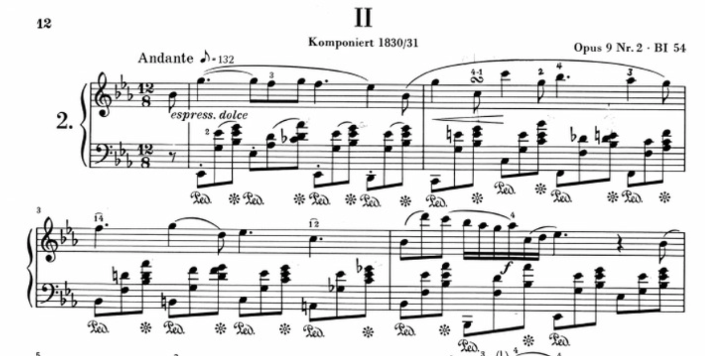Notating Rhythms
It is important (and helpful to the performer) to notate rhythms in a way that shows (reinforces) the meter.
Tuplets
Divisions of the beat, that go against the indicated meter
- Duplets
- Triplets
- Quadruplets
- Quintuplets
- etc...
- Erlkönig
- Moonlight Sonata